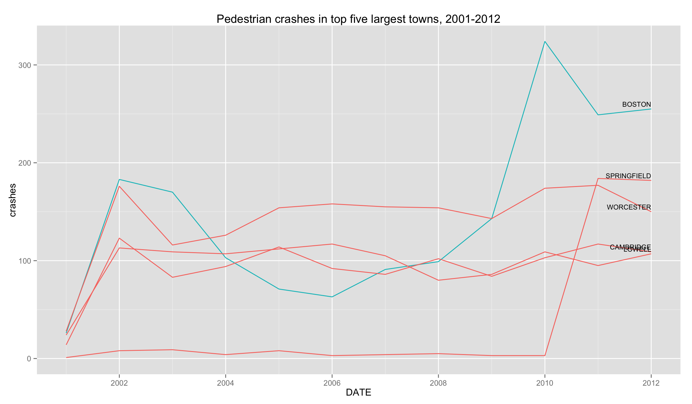

07-30-2014_pedestrians
Gabriel Florit
Let’s explore the question: are pedestrian crashes increasing? We’ll be working with the following data sources:
- pedestrian crashes from MassDOT’s Crash Portal
- town shapefile from MassGIS
- town population estimates from US Census Bureau
NOTE: the following analysis was helpful during the making of Mass. pedestrian crashes and Nestor Ramos’s story, Most Boston pedestrian accidents go unreported.
Setup
# read shapefiles
crashes.shp <- readOGR('downloaded/pedestriancrashes/shp','pedestriancrashes', p4s='+proj=longlat +ellps=WGS84 +datum=WGS84 +no_defs')
towns.shp <- readOGR('downloaded','MA_TOWNS', p4s='+proj=longlat +ellps=WGS84 +datum=WGS84 +no_defs')
# standardize dates
# reject bad dates, e.g. 2041
crashes <- crashes.shp@data %>%
mutate(DATE = mdy(Crash.Date)) %>%
filter(year(today()) >= year(DATE))
# calculate crashes per year for each town
yearlyCrashesPerTown <- crashes %>%
mutate(YEAR=year(DATE)) %>%
group_by(YEAR,City.Town) %>%
summarise(crashes = n())
# create towns dataframe
# add town boundaries
# add total crashes per town
towns <- towns.shp@data %>%
cbind(fortify(gEnvelope(towns.shp,byid=T)) %>%
mutate(id=as.numeric(id)) %>%
group_by(id) %>%
summarise(E=min(long),W=max(long),S=min(lat),N=max(lat)) %>%
arrange(id)) %>%
left_join(yearlyCrashesPerTown %>%
group_by(City.Town) %>%
summarise(crashes = sum(crashes)) %>%
mutate(TOWN=City.Town) %>% select(-City.Town),by='TOWN')
# fortify for mapping purposes
towns.fortified <- fortify(towns.shp,region='TOWN')
# read population data
# remove ' Town' or ' City' suffixes from town names
population <- read.csv('downloaded/towns_2000-2010s.csv',strip.white=T,stringsAsFactors=F) %>%
gather(year,population,-NAME) %>%
mutate(
YEAR = as.numeric(gsub('POPESTIMATE', '', as.character(year))),
place = gsub(' TOWN$| CITY$| TOWN CITY$', '', toupper(NAME))
) %>%
select(-NAME,-year)Analysis
Are pedestrian crashes increasing?
# group crashes by year
# get count
# only look at 2002 onwards
data <- crashes %>%
mutate(DATE=floor_date(DATE,'year')) %>%
group_by(DATE) %>%
summarise(count = n()) %>%
arrange(DATE)
ggplot(data,aes(DATE,count)) +
geom_line() +
ggtitle(str_c('Massachusetts pedestrian crashes, ',year(min(data$DATE)),'-',year(max(data$DATE)))) +
xlab('year') +
ylim(c(0,max(data$count)))It seems so.
But maybe the population is increasing as well? What if we normalize by population?
# group crashes by year
# get count
# only look at 2002 onwards
# add yearly state population
# calculate yearly pedestrian accident rate
data <- crashes %>%
mutate(YEAR=year(DATE)) %>%
group_by(YEAR) %>%
summarise(count = n()) %>%
mutate(place='MASSACHUSETTS') %>%
left_join(population,by=c('YEAR','place')) %>%
mutate(
DATE=as.Date(as.yearmon(YEAR)),
rate=count/population * 100
) %>%
arrange(YEAR)
ggplot(data,aes(DATE,rate)) +
geom_line() +
ggtitle(str_c('Massachusetts pedestrian crashes per capita, ',year(min(data$DATE)),'-',year(max(data$DATE)))) +
xlab('year') +
ylab('crashes per 10,000') +
ylim(c(0,max(data$rate)))The state’s population hasn’t increased significantly, hence the rate looks pretty similar to the raw count.
Can we analyse this data to see which towns are working on their reporting?
# first we'll get a list of top five towns by population for the latest year
# next we join with yearlyCrashesPerTown
data <- population %>%
filter(
YEAR == max(YEAR),
place != 'MASSACHUSETTS'
) %>%
arrange(desc(population)) %>%
select(City.Town = place) %>%
head(5) %>%
left_join(yearlyCrashesPerTown,by='City.Town') %>%
mutate(DATE=as.Date(as.yearmon(YEAR)))
ggplot(data,aes(DATE,crashes,group=City.Town)) +
geom_line(aes(color=City.Town=='BOSTON')) +
geom_text(data=filter(data,YEAR==max(YEAR)),aes(DATE,crashes,label=City.Town),hjust=1,vjust=-0.5,size=3) +
ggtitle(str_c('Pedestrian crashes in top five largest towns, ',min(data$YEAR),'-',max(data$YEAR))) +
theme(legend.position='none') +
ylim(c(0,max(data$crashes)))
Boston’s reporting inconsistency is striking.
What if we normalize by population?
# first we'll get a list of top five towns by population for the latest year
# next we join with yearlyCrashesPerTown
# next we join with population figures
# finally we calculate rate = crashes / population
data <- population %>%
filter(
YEAR == max(YEAR),
place != 'MASSACHUSETTS'
) %>%
arrange(desc(population)) %>%
select(City.Town = place) %>%
head(5) %>%
left_join(yearlyCrashesPerTown, by='City.Town') %>%
mutate(place=City.Town) %>% select(-City.Town) %>%
left_join(population, by=c('YEAR', 'place')) %>%
mutate(
rate=crashes/population * 10000,
DATE=as.Date(as.yearmon(YEAR))
)
ggplot(data,aes(DATE,rate,group=place)) +
geom_line(aes(color=place=='BOSTON')) +
geom_text(data=filter(data,YEAR==max(YEAR)),aes(DATE,rate,label=place),hjust=1,vjust=-0.5,size=3) +
ggtitle(str_c('Pedestrian crashes per capita in top five largest towns, ',min(data$YEAR),'-',max(data$YEAR))) +
ylab('crashes per 10,000') +
theme(legend.position='none') +
ylim(c(0,max(data$rate)))knitr::kable(select(data, -DATE))| YEAR | crashes | place | population | rate |
|---|---|---|---|---|
| 2001 | 26 | BOSTON | 598208 | 0.4346 |
| 2002 | 183 | BOSTON | 599301 | 3.0536 |
| 2003 | 170 | BOSTON | 595864 | 2.8530 |
| 2004 | 103 | BOSTON | 591166 | 1.7423 |
| 2005 | 71 | BOSTON | 587260 | 1.2090 |
| 2006 | 63 | BOSTON | 587816 | 1.0718 |
| 2007 | 91 | BOSTON | 593136 | 1.5342 |
| 2008 | 99 | BOSTON | 600685 | 1.6481 |
| 2009 | 143 | BOSTON | 612669 | 2.3340 |
| 2010 | 324 | BOSTON | 618695 | 5.2368 |
| 2011 | 249 | BOSTON | 629064 | 3.9583 |
| 2012 | 255 | BOSTON | 637845 | 3.9978 |
| 2001 | 28 | WORCESTER | 174535 | 1.6043 |
| 2002 | 176 | WORCESTER | 175938 | 10.0035 |
| 2003 | 116 | WORCESTER | 177114 | 6.5495 |
| 2004 | 126 | WORCESTER | 177721 | 7.0898 |
| 2005 | 154 | WORCESTER | 178242 | 8.6399 |
| 2006 | 158 | WORCESTER | 178990 | 8.8273 |
| 2007 | 155 | WORCESTER | 179409 | 8.6395 |
| 2008 | 154 | WORCESTER | 179696 | 8.5700 |
| 2009 | 143 | WORCESTER | 180539 | 7.9207 |
| 2010 | 174 | WORCESTER | 181264 | 9.5993 |
| 2011 | 177 | WORCESTER | 182331 | 9.7076 |
| 2012 | 150 | WORCESTER | 182312 | 8.2277 |
| 2001 | 1 | SPRINGFIELD | 151894 | 0.0658 |
| 2002 | 8 | SPRINGFIELD | 152510 | 0.5246 |
| 2003 | 9 | SPRINGFIELD | 153012 | 0.5882 |
| 2004 | 4 | SPRINGFIELD | 152936 | 0.2615 |
| 2005 | 8 | SPRINGFIELD | 152925 | 0.5231 |
| 2006 | 3 | SPRINGFIELD | 152911 | 0.1962 |
| 2007 | 4 | SPRINGFIELD | 152799 | 0.2618 |
| 2008 | 5 | SPRINGFIELD | 152857 | 0.3271 |
| 2009 | 3 | SPRINGFIELD | 152934 | 0.1962 |
| 2010 | 3 | SPRINGFIELD | 153122 | 0.1959 |
| 2011 | 184 | SPRINGFIELD | 153581 | 11.9806 |
| 2012 | 182 | SPRINGFIELD | 153489 | 11.8575 |
| 2001 | 24 | LOWELL | 105449 | 2.2760 |
| 2002 | 113 | LOWELL | 105003 | 10.7616 |
| 2003 | 109 | LOWELL | 104565 | 10.4241 |
| 2004 | 107 | LOWELL | 104098 | 10.2788 |
| 2005 | 112 | LOWELL | 103668 | 10.8037 |
| 2006 | 117 | LOWELL | 103673 | 11.2855 |
| 2007 | 105 | LOWELL | 104019 | 10.0943 |
| 2008 | 80 | LOWELL | 104887 | 7.6273 |
| 2009 | 86 | LOWELL | 106024 | 8.1114 |
| 2010 | 109 | LOWELL | 106725 | 10.2132 |
| 2011 | 95 | LOWELL | 107433 | 8.8427 |
| 2012 | 107 | LOWELL | 108335 | 9.8768 |
| 2001 | 14 | CAMBRIDGE | 102048 | 1.3719 |
| 2002 | 123 | CAMBRIDGE | 101959 | 12.0637 |
| 2003 | 83 | CAMBRIDGE | 101727 | 8.1591 |
| 2004 | 94 | CAMBRIDGE | 101542 | 9.2573 |
| 2005 | 114 | CAMBRIDGE | 101440 | 11.2382 |
| 2006 | 92 | CAMBRIDGE | 101876 | 9.0306 |
| 2007 | 86 | CAMBRIDGE | 102313 | 8.4056 |
| 2008 | 102 | CAMBRIDGE | 103298 | 9.8743 |
| 2009 | 84 | CAMBRIDGE | 104665 | 8.0256 |
| 2010 | 103 | CAMBRIDGE | 105340 | 9.7779 |
| 2011 | 117 | CAMBRIDGE | 105631 | 11.0763 |
| 2012 | 109 | CAMBRIDGE | 106172 | 10.2664 |
This graph shows that Boston’s reported crash rate is quite low. We could probably make a case that Boston has a substantial amount of external foot traffic - people that don’t live in the city but work in the city. If we were to include that number, Boston’s crash rate would go down even lower. This graph also shows how Springfield’s significantly increased its reporting in 2010.
What about other towns?
# only look at towns with more than 50 crashes total
data <- towns %>%
filter(crashes>50) %>%
arrange(desc(crashes)) %>%
select(City.Town=TOWN) %>%
left_join(yearlyCrashesPerTown,by='City.Town') %>%
mutate(DATE=as.Date(as.yearmon(YEAR)))
ggplot(data,aes(DATE,crashes,group=City.Town)) +
geom_line() +
ggtitle(str_c('Pedestrian crashes in towns with greater than 50 crashes in period ',min(data$YEAR),'-',max(data$YEAR),'. Y-scale is relative to each town.')) +
facet_wrap(~City.Town,scales='free',ncol=8) +
theme(
axis.ticks=element_blank(),
axis.text=element_blank(),
panel.grid = element_blank()
)
It seems that Barnstable and Springfield didn’t report many pedestrian accidents prior to 2010.
One final graph - let’s look at the distribution of reported crashes per town over time.
data <- towns %>%
arrange(desc(crashes)) %>%
select(City.Town=TOWN) %>%
left_join(yearlyCrashesPerTown,by='City.Town') %>%
mutate(DATE=as.Date(as.yearmon(YEAR)))
ggplot(data,aes(crashes,group=YEAR)) +
geom_histogram() +
facet_wrap(~YEAR,nrow=3) +
ggtitle(str_c('Distribution of pedestrian crashes per town, ',min(data$YEAR),'-',max(data$YEAR)))
That’s not particularly useful.
data <- towns %>%
arrange(desc(crashes)) %>%
select(City.Town=TOWN) %>%
left_join(yearlyCrashesPerTown,by='City.Town') %>%
filter(!is.na(YEAR)) %>%
mutate(DATE=as.Date(as.yearmon(YEAR)))
ggplot(data,aes(DATE,crashes,group=DATE)) +
geom_boxplot() +
ggtitle(str_c('Distribution of pedestrian crashes per town, ',min(data$YEAR),'-',max(data$YEAR)))Interesting, but not very revealing.
How many pedestrian accidents (involving injuries) in Boston since 2010?
# create a new column, SEVERITY, that creates three groups: fatal injury, non-fatal injury, other
data <- crashes %>%
mutate(
YEAR = year(DATE),
SEVERITY = ifelse(grepl('fatal injury',tolower(as.character(Crash.Seve))), as.character(Crash.Seve), 'Other')
) %>%
filter(
City.Town == 'BOSTON',
YEAR >= 2010
) %>%
group_by(YEAR,SEVERITY) %>%
summarise(ACCIDENTS = n())
knitr::kable(data)| YEAR | SEVERITY | ACCIDENTS |
|---|---|---|
| 2010 | Fatal injury | 7 |
| 2010 | Non-fatal injury | 189 |
| 2010 | Other | 128 |
| 2011 | Fatal injury | 3 |
| 2011 | Non-fatal injury | 158 |
| 2011 | Other | 88 |
| 2012 | Fatal injury | 4 |
| 2012 | Non-fatal injury | 168 |
| 2012 | Other | 83 |